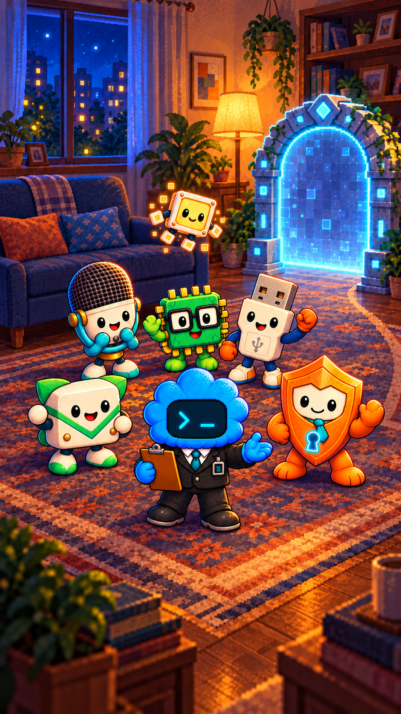

PIXELKOVIA · PODKLADY NA VIDEO
Brána sa otvorí. Kamaráti odídu a Piko zamáva posledný.
Jeden hotový štartovací obrázok a jeden prompt. Video bude mať 10 sekúnd, veselé poskoky a jemné pixelkové zvuky. Bez hovorenia.
1. Otvor OpenGen
Prihlás sa a otvor generovanie videa. Podklady aj nastavenia máš nižšie v poradí, v akom ich použiješ.
2. Stiahni a nahraj štartovací obrázok

Stiahnuť štartovací obrázok PNG

Otvoriť obrázok v plnej veľkosti ↗
V OpenGen ho nahraj do Start Image. Pole End Image nechaj prázdne.
3. Referencie: teraz ich nepridávaj
Pre tento postup použi pripravený Start Image, v ktorom je už celá partia. Samostatné portréty si ponechaj ako zálohu pre úpravu obrázkov alebo iný režim generovania.
Otvoriť záložné referenčné obrázky postavičiek
Každý obrázok má priamy odkaz na otvorenie a stiahnutie.
4. Nastav OpenGen
| Model | Seedance 2.0 |
|---|---|
| Režim | Start Image / Image to Video |
| Pomer strán | 9 : 16 — na výšku |
| Dĺžka | 10 sekúnd |
| Rozlíšenie | 1080p, ak ho vybraný model ponúka; inak 720p |
| Zvuk | ON — iba nehovorené pixelkové zvuky |
| End Image a References | Nechaj prázdne |
Na tvojej snímke je vybraný Seedance 2.0 Fast. Ak chceš štandardný model, prepni ho na Seedance 2.0; Fast je alternatíva pri 720p. Pred spustením skontroluj názov modelu, 10 sekúnd a cenu priamo v OpenGen.
5. Skopíruj tento text do promptu
Stlač tlačidlo, vlož celý anglický text do poľa pre prompt v OpenGen a potom spusti generovanie. Vytváraš jeden klip.
Čo skontrolovať pred ďalším generovaním
Každé generovanie môže priniesť odchýlku. Použiteľný výsledok si ulož pred ďalším pokusom. Vyššie rozlíšenie alebo zmena modelu znamená nový výsledok, nie zaručene rovnaký záber.
Samotné video ešte nebolo generované. Herná rozlúčka a uložený postup zostávajú dostupné cez návratovú bránu.